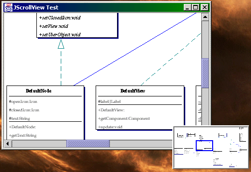

by Claude Duguay
ROUGH DRAFT
Swing's JScrollPane provides effective functionality when it comes to navigating large visual spaces. Not all interface elements are likely to fit within a viewing area and the need to move around a scrolling window seems obvious. To further enhance the user experience, adding a quick way to move around the viewing space is useful, typically implemented as a thumbnail view that lets you drag a rectangle around to find the view port you need to see. This is such a common way of dealing with scrollable views that it clearly deserves its own component. What's more, we'll introduce a great little popup variant that lets you offer transparent, discoverable functionality to your user base.
Figure 1: JScrollView Thumbnail View with Synchronized JScrollPane view.
Figure 1 shows a typical layout for the JScrollView, set in the upper left corner of the interface. The blue rectangle is synchronized with the viewport area displayed by the JScrollPane on the right. If you resize the scroll pane, scroll it or the JScrollView, you'll see that everything stays in synch. In fact, passing the JScrollView object a reference to the JScrollPane is all you need to do to make this functional, aside from deciding where to put the JScrollView on the screen.
Figure 2 shows what a popup view might look like. The JScrollPane component provides a setCorner method that lets you place objects in any of the four display corners. The bottom right corner is handy because it represents the conjunction of two scroll bars and is typically left empty. By putting a JScrollViewPopup element there, you can support quick navigation with a simple mouse click, move and release. The result is very effective, hiding the navigation window until the user clicks in the corner, disappearing after use.

Figure 2: JScrollView Popup
The implementation requires a mere handful classes.
Listing 1 shows the JScrollView class. This is the thumbnail view we'll use for navigation. To use it, you merely
need to create an instance, passing a reference to the JScrollPane you want to track and a maximum window size.
There are two constructors. One of them lets you specify whether you intend to use JScrollView in a popup window.
The other defaults to a value of false for the isWindow argument. The size parameter is there to manage the viewing
area. Setting a preferred size would impact the proportions of the window, so the code determines what the longest
side of the scrollable area represents and calculates the size based on those proportions. The intent is to give
developers enough control to predict the preferred size as much as possible, without forcing you to manage proportionality
at the same time.
The main constructor sets instance variables, registers itself as a ChangeListener on the JScrollPane viewport, adds mouse listeners and a border, and calculates the preferred size proportionally. To display the proper selection rectangle, we need to track changes to the viewport. When we get stateChanged events from the JScrollPane, we grab the total dimensions of the scrolled component and the current size of the viewing area, after which repaint is called to update the display.
The paintComponent method calls on a utility method named calculateRectangle, which figures out the size of the area that represents the currently displayed window, relative to the total viewing space. The calculation accounts for insets, so that borders can be used without impacting the results. The paintComponent method clears the background and draws the selection rectangle. You'll see some code in between that handles a thumbnail image.
We generate thumbnails automatically if you are using a JScrollViewPane, which allows us to capture the scrollable image for this very purpose. You can use any JScrollPane with a JScrollView, but the background will be painted blank since there is no way to reach the image effectively. JScrollPane uses a backing store image for optimization reasons, but the image is not fully painted until you've viewed the whole area, which is less than useful. We'll solve this problem with a CapturePanel implementation.
For now, keep in mind that JScrollView will generate a thumbnail image from a JScrollViewPane and that the view may be identified as dynamic. If you plan to edit the component you put in the scroll view, or any child element, the isDynamic flag allows JScrollView to regenerate the thumbnail on-the-fly every time it paints. This has a negative performance impact because it can be expensive to resize large images, but in some cases, it's unavoidable. Where you can predict the static nature of the viewing space, the performance improvement is considerable.
The rest of the code in Listing 1 handles mouse events. When the mouse is pressed, we anchor the current relative position and store it for subsequent calculations. The mouseDragged event moves the viewing rectangle along with the view position in the associated JScrollPane. Most of the code in this method calculates the correct upper/left corner of the viewport. The mouseMoved method does something tricky. Other than setting the appropriate cursor when we are inside the viewport rectangle, it passes all its events to mouseDraged if the isWindow flag is set. You'll see how we use this in the JScrollViewPopup implementation to reduce extraneous clicking.
Listing 2 shows the code for JScrollViewPane, which is there primarily to support automatic capture of thumbnail images. If you don't need a thumbnail, you can use a JScrollPane instead. JScrollViewPane provides the same constructors as JScrollPane adding a single argument to each that allows you to tell JScrollView whether images need to be generated dynamically. Set this flag to false wherever possible. If you are doing any editing in your view, however, the results will be ineffective if you don't activate it. Even a text cursor, for example, will fail to draw properly if your content is dynamic and you don't tell the code to handle this condition properly.
The behavior gets changed by overriding the setViewportView method, which puts a CapturePanel between the view Component and the JScrollPane implementation. You'll notice we also turn off the backing store feature. JScrollPane is smart enough to buffer the view in an image if it can. Unfortunately, there is no way to reach this image through the Swing API and extending JViewPort doesn't help because the image is not entirely drawn until all areas are visited. This is not very useful for what we need to do, so we replace the backing store with our CapturePanel and disable the original behavior to avoid performance problems. There's no point in managing two images given the overhead. We add a getImage method so we can get the captured image on-demand.
Lets take a quick look at the CapturePanel code in Listing 3. The constructor puts the child component in the CENTER of a BorderLayout and stores references to the arguments. This is where the isDynamic flag is really used. This class manages an image buffer and keeps track of the component's size in case it changes. The paint method does a lot of the work, creating the image buffer if the viewing space changes. Depending on the isDynamic flag setting, the paintBuffer method is called on every paint or only when the buffer is regenerated.
You'll notice we set a clipping region before calling paintBuffer. The paintBuffer method is the key to capturing functionality and did not come easily in this project. Of course, you'll be able to reference this article anytime you want to get the magic incantation, but I had to try long an hard to find this answer because it's not very obvious. If the clipping region is not set, the component will not draw properly. What's more, you need to set the font and color from the original graphic context or the code won't not cooperate. Then, and only then, can you paint the component and its children directly into the buffered image's graphic context without running into problems.
At this point you can use JScrollView directly with any JScrollPane or have the thumbnail automatically generated for any view by using JScrollViewPane. You can drop JScrollView anywhere you like and use it like any other Swing component. Notice that you are not limited to a single JScrollView. Many views can be active at the same time, controlling and responding to the same JScrollPane. Each will always stay in synch without any additional effort on your part. But wouldn't it be nice if you could just pop up a JScrollPane on-demand and dispose of it after moving where you want. We'll implement a JScrollPanePopup class that deliver the extra mile.
Listing 4 shows the code for JScrollViewPopup. This is really the trigger object, like a drop-down button rather than the actual popup window. I chose to turn the button border off because the popup is most useful from the bottom right hand corner of a JScrollPane and tends to look better if less attention is draw to it. If you need to use it elsewhere, you can modify it to use another button, possibly the BasicArrowButton, depending on your needs. As it stands, JScrollViewPopup creates a ScrollViewWindow and makes it visible only when the mouse is pressed. The mousePressed event handles moving the window to the correct location before showing it, centering the selection rectangle where the mouse is.
The ScrollViewWindow class in Listing 5 extends JWindow and sets a JScrollView component as its only child. For clarity, we put a border around the display to offset it from a flat background. There's not much else to do other than register a mouse listener and make the window invisible when the mouse is pressed. We set up a Timer with a 500 millisecond delay whenever the mouse leaves the window so that we can dismiss the popup. We use a short delay in case the mouse exit was accidental.
You may recall from the JScrollView that when the isWindow flag is set, the mouse movement has the same effect as a drag motion. The result of our JScrollViewPopup is that you can press on the trigger and have the ScrollViewWindow popup centered with the mouse already in the right place. You can move the mouse around to find the area you're interested in and when you release it, the window gets dismissed. In effect, you can jump quickly to a given viewable area with a simple click, move, release combination, making navigation very fast and user-friendly.
When you download the code at www.java-pro.com, you'll find a JScrollPaneTest class that lets you play around with the JScrollView elements. Putting the JScrollViewPopup in the bottom right hand corner of the scroll pane is as easy as calling JScrollPane.setCorner with the LOWER_RIGHT_CORNER constant.
I hope you find many uses for the JScrollView component. It can help users navigate large areas quickly and easily, without removing the familiar scroll pane semantics and familiarity. The additional functionality allows a user to chose what suits him/her best and makes your interface more effective. The discoverable popup is a nice enhancement to virtually any scrolling interface - unobtrusive, practical, and user-friendly. I suspect you may also find some innovative uses for the CapturePanel if you need to capture your interface for other reasons. Have fun with it!